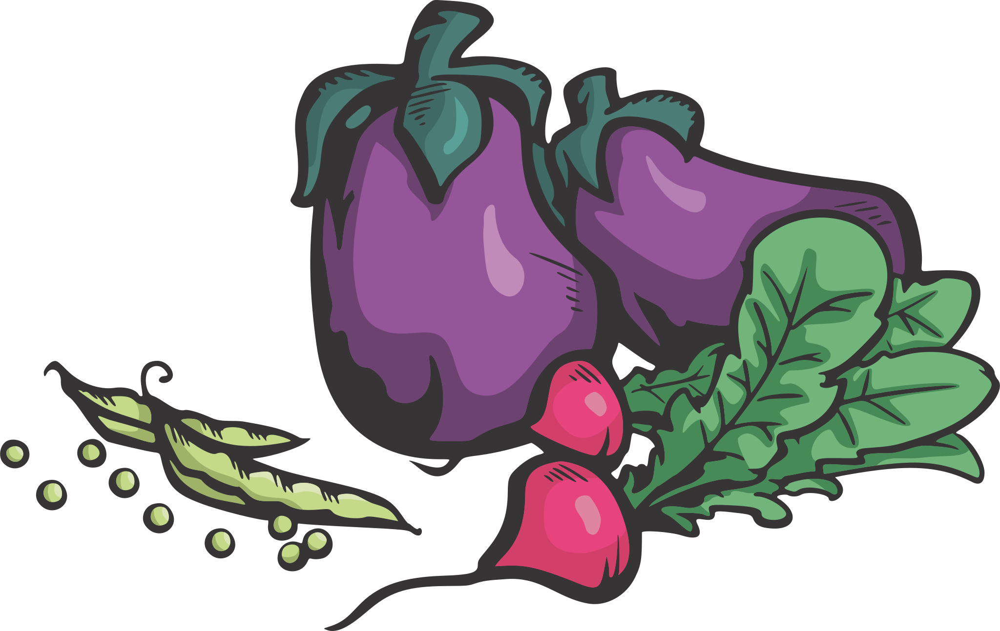

Ingredientes:
- 750 Gramos Calabaza (Pelada)
- 2 Cubos Caldo De Verduras
- 2 Litros Agua
- 1 Pizca Sal
- 1 Pizca Pimienta Negra Molida
- 1 Cucharada grande Crema 0% (Para acompañar)
- 1 Poco Croutones Tostados De Pan Integral (Para acompañar)
- 1 Poco Perejil Picado (Para acompañar)
Instrucciones
- Cortar la calabaza en cubos y dorar en una olla de fondo grueso con el aceite. Agravar el agua y los cubitos de Caldo
- Una vez que la calabaza este bien tierna licuar.
- Servir la sopa acompañada de hilos de crema caliente, croutons y perejil picado.